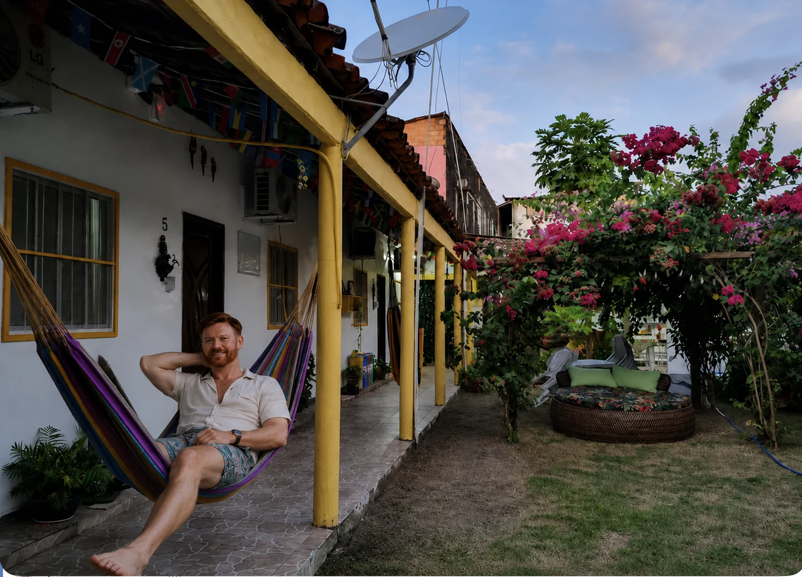
Dica visual do Lipe
Hospedagem no Marajó não é só base operacional. Quando o lugar tem jardim, rede, sombra e um pouco de silêncio, ele ajuda a entrar no ritmo da ilha — e isso muda a experiência.
Pesquisar hotéis no MarajóCampos que alagam, mangues que avançam sobre a areia, praias moldadas pelas marés, búfalos, cerâmica e uma cultura que não cabe num único cartão-postal. Marajó pede tempo, respeito e curiosidade.
Marajó não é apenas uma ilha: é um território de milhares de ilhas e ilhotas entre a foz amazônica e o oceano. Em uma primeira viagem, Soure e Salvaterra funcionam como bases para entender praias, campos, rios, manguezais, fazendas e comunidades.
A melhor experiência não nasce de tentar “ver tudo”. Ela aparece quando você combina travessias, conversas, comida local, um dia de praia, outro de campo e tempo para observar como a paisagem muda.
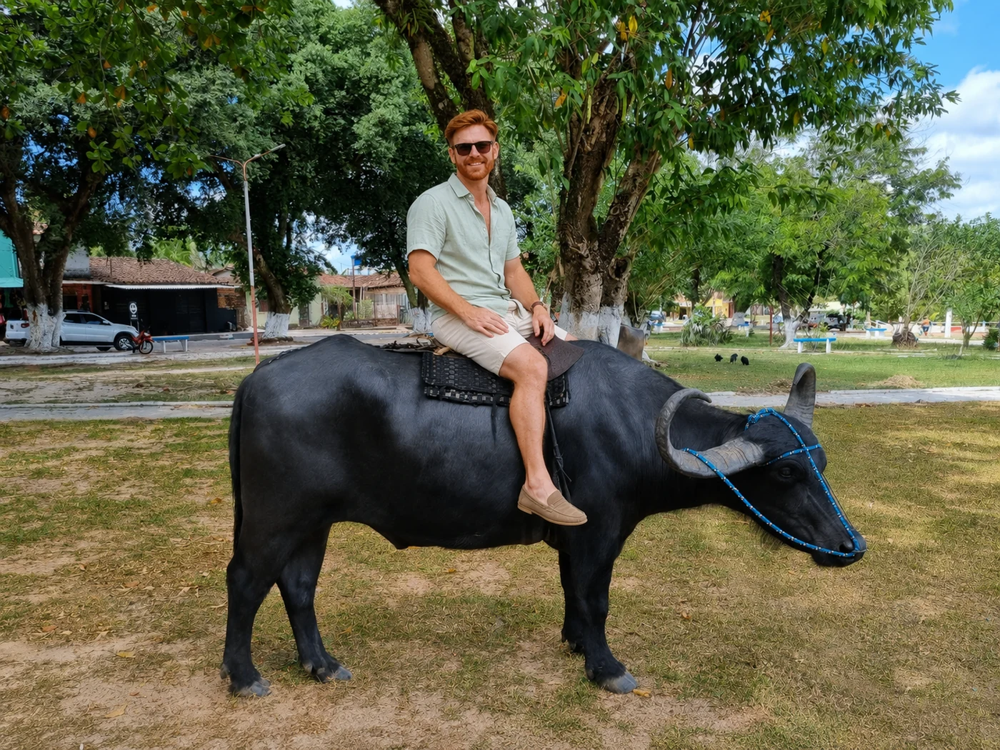
A forma mais prática de chegar ao Marajó é por Belém, em embarcações de passageiros ou em combinações que incluem travessia até Camará. Operadores, horários e tempos mudam, então confirme tudo perto da viagem.
Se a prioridade for praticidade, muita gente estrutura a viagem por Soure. Para quem leva carro ou prefere uma base mais tranquila, Salvaterra também faz sentido. Mais do que decorar rotas, vale entender que a operação local muda com frequência.
Marajó funciona melhor quando você reserva a travessia, evita um roteiro apertado demais no dia da chegada e aceita que a logística faz parte da experiência.
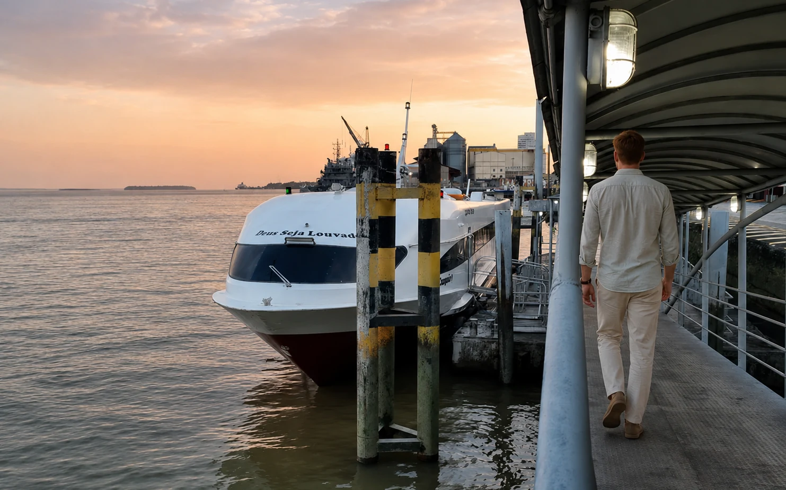
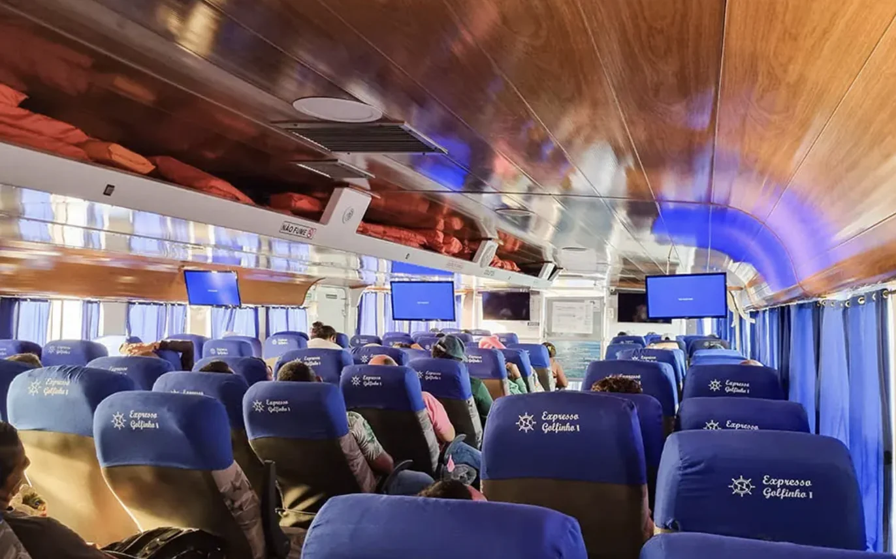
Mesmo que a hotelaria local seja mais simples do que em destinos de massa, faz toda diferença escolher a base certa e reservar cedo em feriados, férias e julho. Como o site tem afiliado de hospedagem, esta é também uma boa hora para comparar disponibilidade e tarifas.

Hospedagem no Marajó não é só base operacional. Quando o lugar tem jardim, rede, sombra e um pouco de silêncio, ele ajuda a entrar no ritmo da ilha — e isso muda a experiência.
Pesquisar hotéis no MarajóPara quem quer localização prática, mais serviços e proximidade das praias mais conhecidas.
Faz mais sentido para quem quer tranquilidade, vida local e fácil combinação com Joanes.
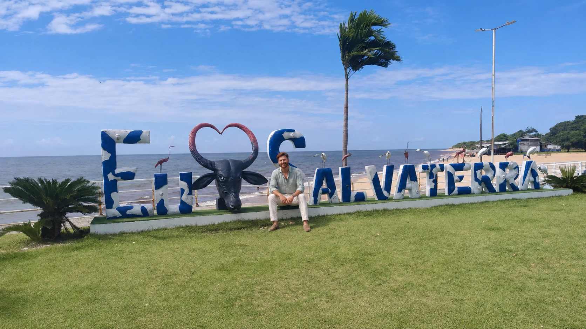
Se for sua primeira vez, eu tenderia a começar por Soure e, se o tempo permitir, encaixar Salvaterra e Joanes. Se a prioridade for desacelerar e viver a atmosfera local, Salvaterra pode agradar mais desde o início.
Para uma primeira leitura do destino, eu dividiria o Marajó em três frentes: o eixo prático de Soure, a atmosfera mais local de Salvaterra e o conjunto histórico-praiano de Joanes.
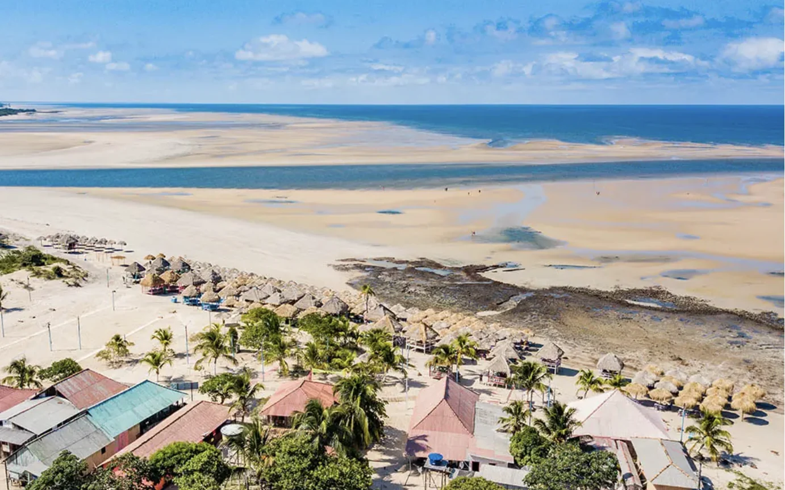
Uma das praias mais lembradas de Soure, boa para caminhar, almoçar e sentir a escala ampla do litoral marajoara.
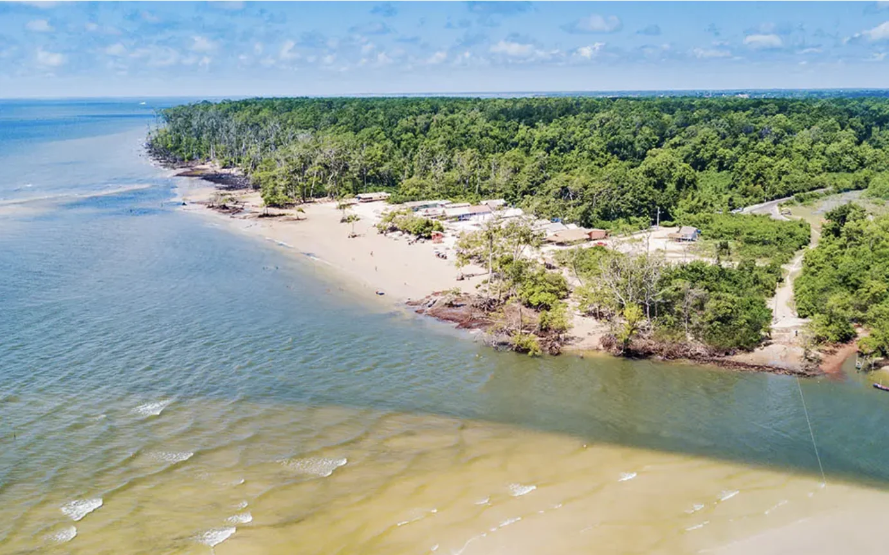
Clássica para banho e para observar a relação entre areia, maré e vegetação no entorno de Soure.
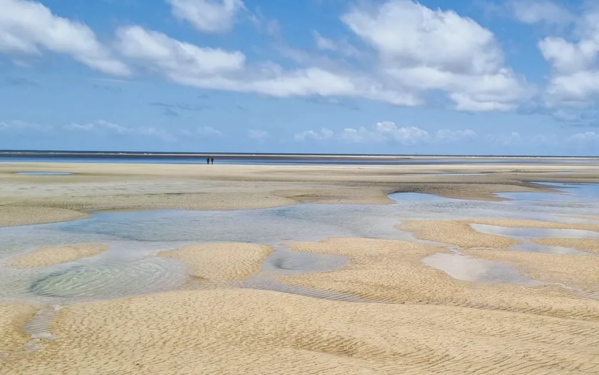
Uma alternativa interessante para quem quer variar o roteiro e encontrar outro ritmo de praia na ilha.
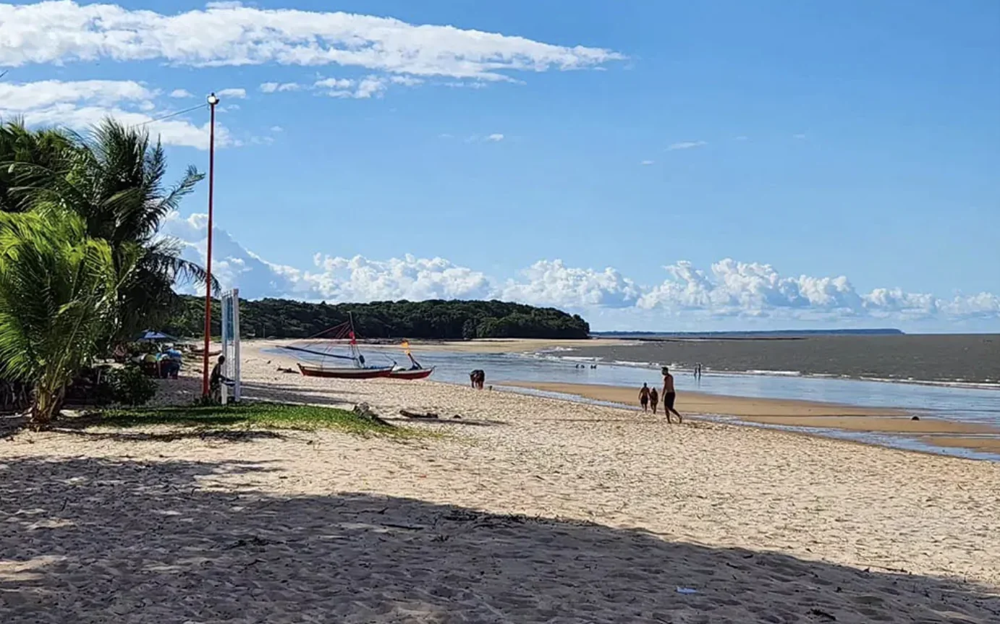
Importante pela combinação entre praia, ruínas e atmosfera de vila — um dos lugares mais simbólicos do Marajó.
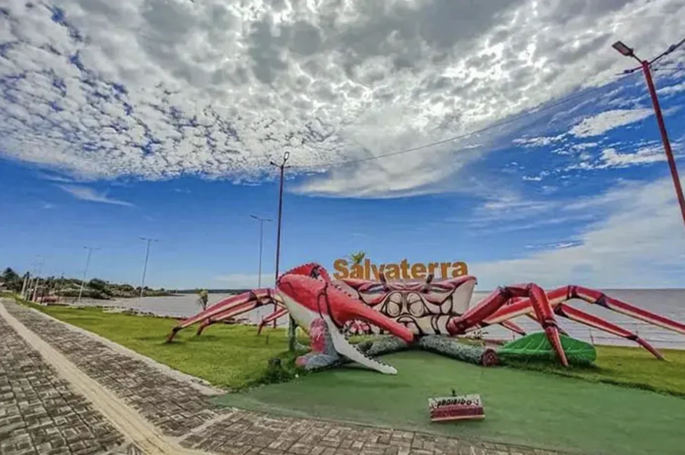
Boa para ampliar a leitura de Salvaterra e perceber como o litoral muda de um trecho para outro.
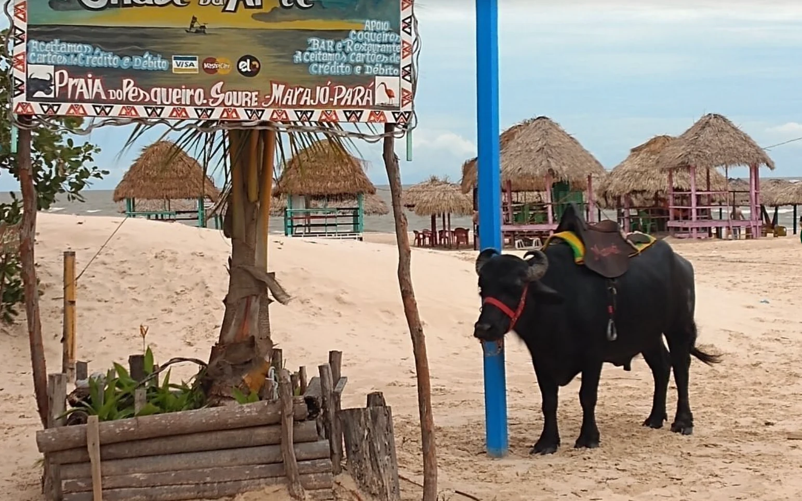
A árvore na areia resume bem o Marajó visual: um lugar onde natureza, vento e maré criam cenas muito próprias.
O Marajó interessa justamente porque a viagem não fica limitada a uma praia. Campos alagáveis, fazendas, manguezais e observação de aves entram no desenho natural do destino.
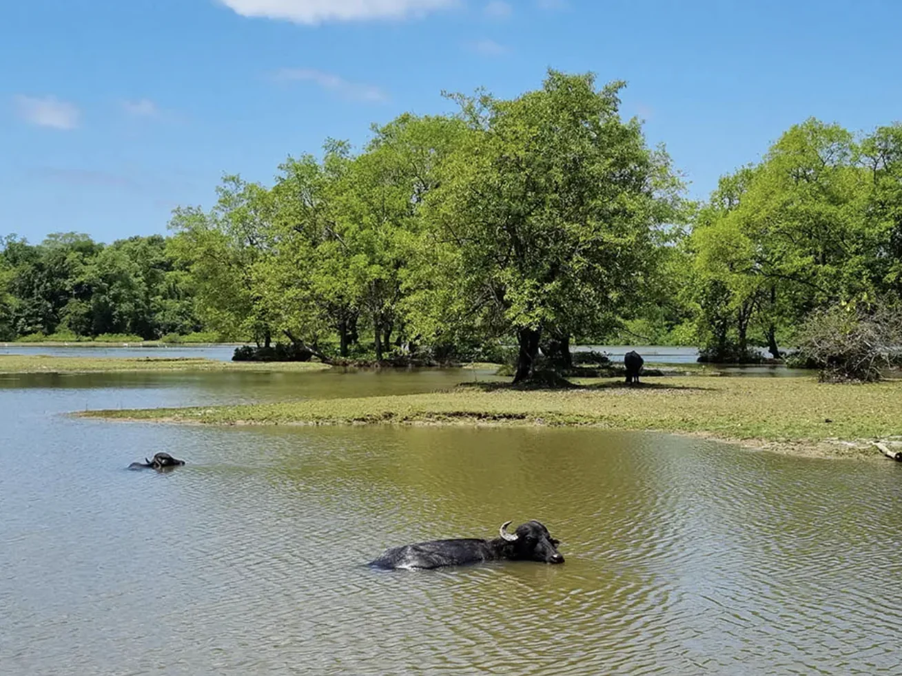
Os búfalos fazem parte do imaginário do Marajó, mas o mais interessante é entendê-los dentro do contexto rural da ilha e escolher experiências responsáveis.
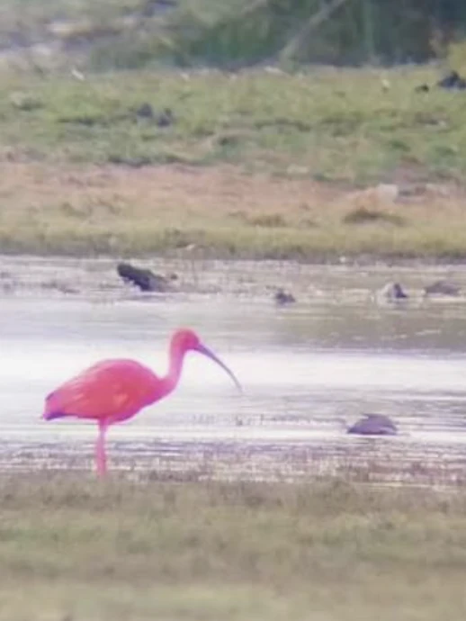
Guarás, garças e outros pássaros ajudam a contar a riqueza ecológica do arquipélago, especialmente nas áreas de campo e beira d’água.
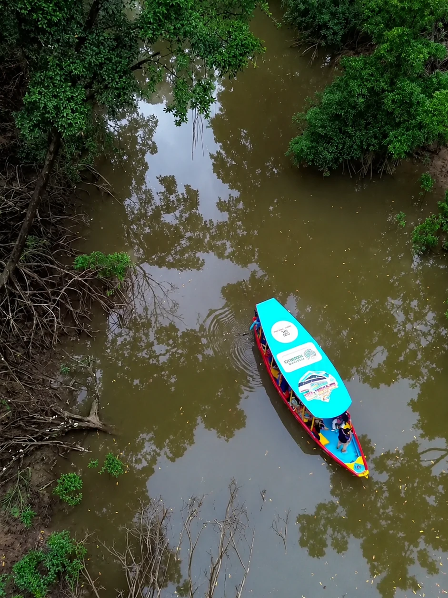
Mangue é parte central da experiência, tanto pela paisagem quanto pela sensação de travessia e observação da vida costeira amazônica.
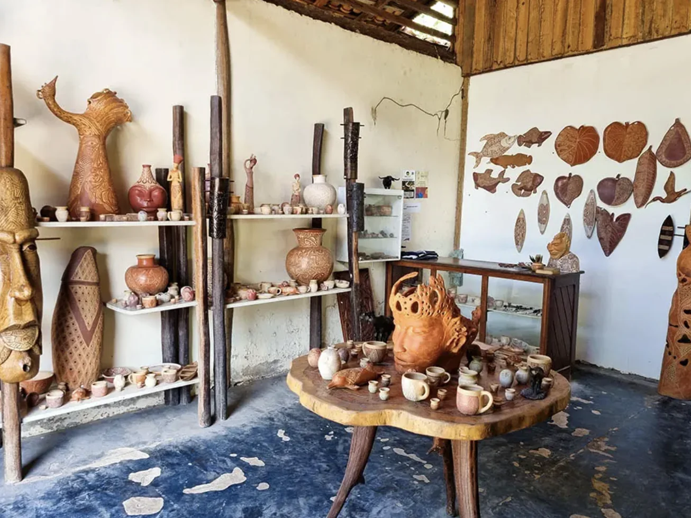
A cerâmica marajoara e o artesanato reforçam que o destino não se resume à natureza: há memória, símbolo e identidade em cada camada da visita.
Para a minha leitura editorial, faz mais sentido valorizar os sabores que ajudam a contar o destino sem cair no óbvio. O queijo do Marajó é protagonista; a tapioca é parceira natural.
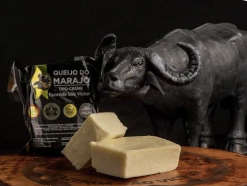
É um dos produtos mais associados à ilha e merece entrar no roteiro, seja no café da manhã, em petiscos ou em receitas regionais.
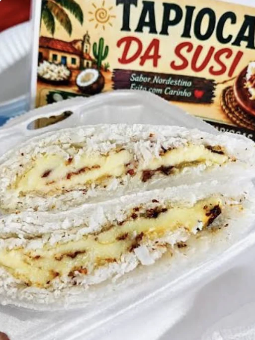
Uma combinação simples e certeira para reforçar o clima local sem exagero e sem transformar a gastronomia num parêntese turístico.
Uma sequência possível para conhecer o essencial sem transformar a ilha em checklist. Ajuste conforme maré, clima, base escolhida e horários das embarcações.
Travessia, chegada, check-in e fim de tarde tranquilo na orla ou no Rio Paracauari. Não sobrecarregue o primeiro dia.
Pesqueiro, Barra Velha e uma praia extra como Céu ou Cajuúna, com tempo para caminhar, almoçar e observar as marés.
Experiência rural responsável, manguezal, ateliê de cerâmica, mercado e noite sem pressa em Soure.
Travessia, centro de Salvaterra, ruínas e praia de Joanes. Dependendo do horário, durma mais uma noite antes de voltar.
Não existe uma única versão do Marajó. O regime de chuvas e as marés alteram acessos, cores, praias e campos.
Em geral, o segundo semestre favorece praias mais expostas, estradas e passeios terrestres. Julho costuma ter maior procura; reserve cedo e espere movimento.
No primeiro semestre, campos e áreas baixas podem alagar. A paisagem fica exuberante, mas alguns acessos exigem adaptação e planejamento local.
O vídeo original é a base narrativa desta página. Preços e contatos citados nele pertencem ao momento da gravação; use a página para a leitura editorial e confirme dados operacionais.
Aqui a página usa a thumb correta do episódio com link direto para o YouTube. Assim a prévia local fica estável e o clique continua levando ao vídeo certo.
Abrir no YouTubeReserve voos e hospedagem com antecedência, mas deixe espaço para ajustar o roteiro conforme clima, maré e operação local.
Belém é a porta de entrada mais prática para organizar a travessia ao Marajó.
Pesquisar voosSe estiver em dúvida, comece comparando localização, cancelamento e café da manhã.
Pesquisar hotéisLevar carro pode ampliar a liberdade, mas exige planejar a travessia e as condições locais.
Entender a locaçãoMesmo em viagem nacional, assistência pode ajudar em emergências e imprevistos.
Ver seguroUma Amazônia de marés, campos, praias e cultura — para conhecer sem pressa e sem tentar domesticar a paisagem.
Acompanhar o canal